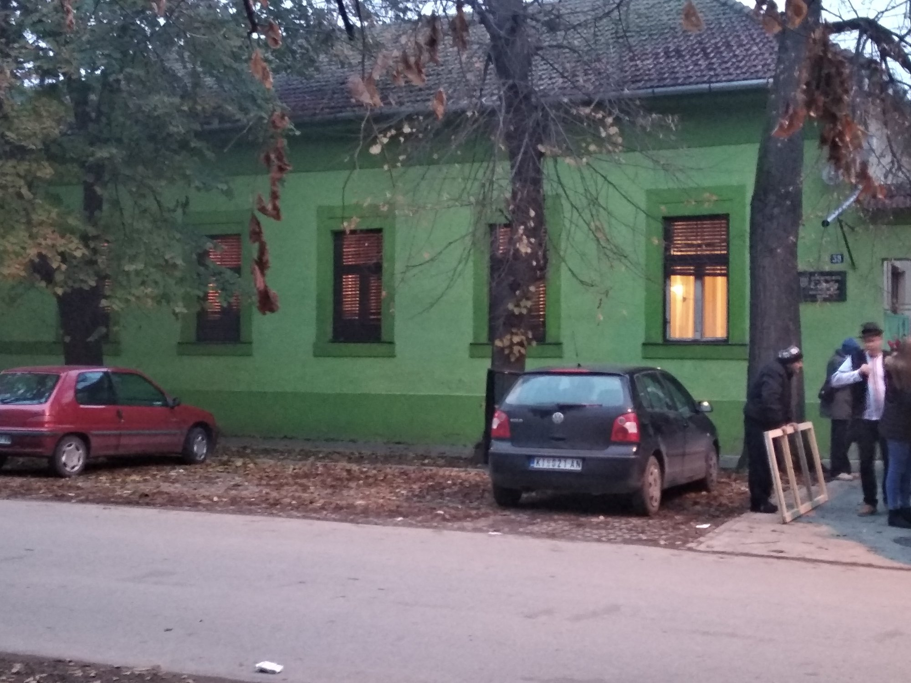

EGYSÉG MŰVELŐDÉSI EGYESÜLET
Nehéz körülmények közepette indult meg a magyar művelődési élet 1945 májusában Nagykikindán. A háború okozta sebek még nagyon frissek voltak, káder, eszköz és egyéb feltételek is hiányoztak a színvonalas munkához. Ennek ellenére megalakult a Velika Kikindai Magyar Közművelődési Közösség, első elnöke Fa József volt. Rövid idő alatt értelmiségiek, munkások, idősek, fiatalok kapcsolódtak be a Közösség munkájába...
Teljes cikk